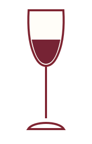

2024
Red Blend
Typical character: Dark fruit, gentle spice, and a smooth finish.

Serve slightly cool at 60 to 65°F in a Bordeaux or universal wine glass.
- Enjoy with
- Beef, burgers, or barbecue.
- Serving idea
- Open 20 minutes before serving.